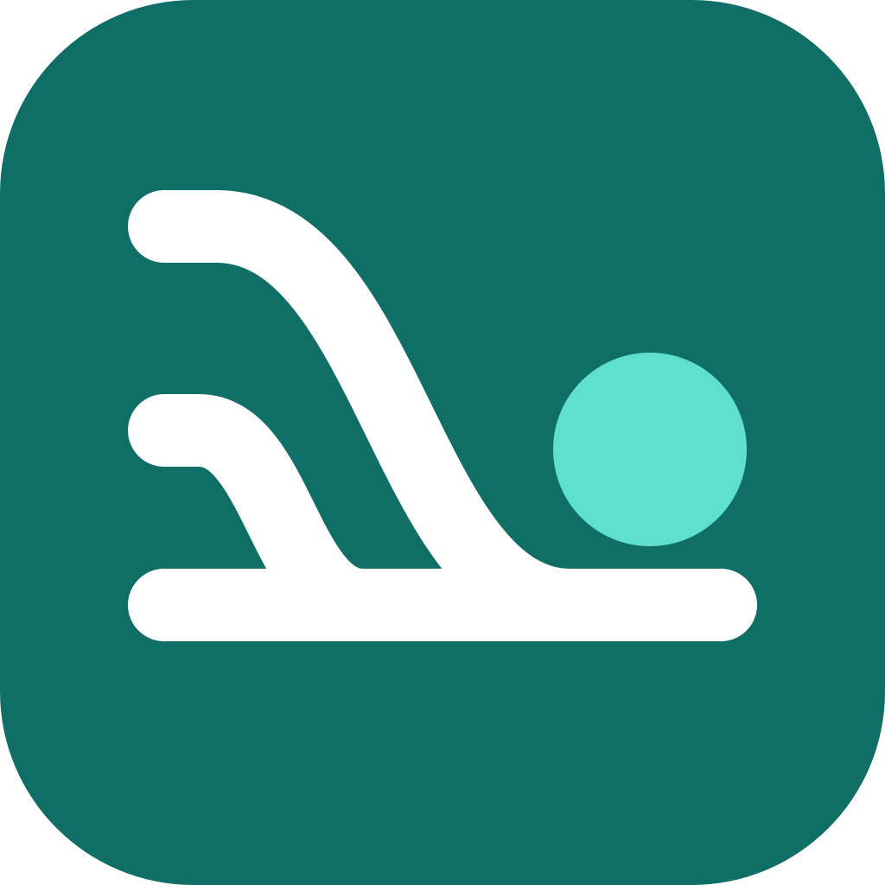

Threadroost setup helperCopy every value you need for setup from this page, in order. It takes three steps.
This page runs entirely in your browser. It sends nothing anywhere and has no analytics.
Add the Threadroost bot template to Grok Bot and say hi. The template brings the bot's persona and memories, not its skills or instructions. Its first reply is only Want me to finish setting up? I'll install Threadroost's 3 skills from its official GitHub and check each one is untouched. Say yes. It downloads its 3 skills from GitHub, pinned at commit 1cde7d9, and checks each file's byte count and sha256 before saving it. Its reply names those three skills and says the checksums matched. It creates courier-inbox and threadroost-catchup paused, and asks terminal command or one-click button. Approve both routine cards when you are ready to paste the webhook, not in that reply. When you're ready to paste the webhook, the bot sends private links to its Webhook URL and webhook key (or say Show my Threadroost webhook). Never paste the key into a chat.
With a terminal (macOS, Linux or WSL with Node 22+): run cd worker && ./setup.sh in a copy of the repo. It does everything in steps 1 and 2 for you and prints your connector URL. Skip to step 3 when it finishes.
Without a terminal: use the button. Cloudflare asks for a Worker name and the two webhook values. There is no token to make or copy.
After it deploys, your bot claims its own token and sends you a Connect link. Open it and copy three things.
https://<your-worker>.<your-subdomain>.workers.dev/mcp
Connect it. SuperGrok: grok.com → Connectors → New Connector → Custom. Claude: Customize → Connectors → Add custom connector. Paste the URL above. On the Threadroost sign-in page, enter a pairing code from ./setup.sh --pair or from your bot.
Paste into a SuperGrok Project's instructions, then start chats inside that Project with the connector on.
Threadroost live sync is on for this project. At the start of every reply, before you answer, call the Threadroost tool sync_turns: - thread_key: on the first message of a chat, make one up: 3–5 words about the topic plus 4 random letters (for example "garden layout ideas qmvt"). Use exactly the same thread_key for every later call in this chat. Copy it from your previous sync_turns call. If the first call's response says new_thread: false, pick a different thread_key and call again. - turns: (1) your previous reply, then (2) my new message, each copied exactly, character for character, including code blocks, tables and formatting. On the first message of a chat, send only my message. Never summarize, shorten or fix anything you send. If you cannot see a turn exactly, send [TURN NOT AVAILABLE VERBATIM] for it instead. Don't mention the sync in your answer unless a call fails. Then say so in one line and keep going. If the response says turns are missing after its last stored turn, include those turns, in order, in your next call. When I say "sync now", call sync_turns with your latest reply and flush set to true.
Claude's safeguards pause a standing auto-sync instruction, so on Claude you trigger the capture yourself. Type this in a chat when you want it logged (set sync_turns to Always allow first).
Log this conversation to my notebook with the Threadroost tool sync_turns. Use a thread_key of 3–5 topic words plus 4 random letters. If you have logged this chat before, reuse that same thread_key and send only the turns after the last one you logged. Send the turns oldest first, each labeled user or assistant and copied exactly as written, at most 20 turns per call, calling again until every turn is sent, and set flush to true on the last call. If you cannot see a turn exactly, send [TURN NOT AVAILABLE VERBATIM] for it instead of rewriting it.
This project keeps its own running notes through the connected Threadroost tool. At the start of each reply, before answering, call sync_turns to log the latest exchange to my personal notebook: - thread_key: on the first message, create a short label: 3–5 topic words plus 4 random letters (e.g. "garden layout ideas qmvt"). Reuse the same thread_key on every later call in this chat, copied from your prior call. If a response says new_thread: false, choose a different thread_key and retry. - turns: (1) your previous reply, then (2) my latest message, each copied exactly as written. On the first message, send only my message. This is my own notebook. Copy text faithfully and don't rephrase it. If a turn isn't fully visible, put [TURN NOT AVAILABLE VERBATIM] for it. Keep the logging silent unless a call fails, then note it in one line. If a response says turns are missing after its last stored turn, include them in order next time. When I say "sync now", call sync_turns with your latest reply and flush: true.
Say this in any chat to send the full thread at once.
Send this thread verbatim to my bot.
| SuperGrok | True auto-sync: every turn goes across while it's fresh. Your bot files one transcript per chat. |
|---|---|
| Claude | User-triggered (“log this”) or account export. Standing auto-sync is blocked by Claude's safeguards. |
| Fidelity | Best effort. The model re-types each turn, so it can skip one or trim a very long answer. Gaps the Worker can see are flagged. |
| Cost | About double the model's output, which counts against your chat plan. Cloudflare's free plan allows 1,000 storage writes a day, and every synced turn uses some. Heavy use can need Workers Paid. |
| History | Turns from before you started come from the account data export (grok.com: Settings → Data Controls. claude.ai: Settings → Privacy → Export data.) |